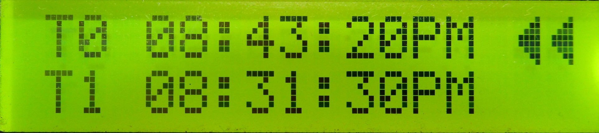
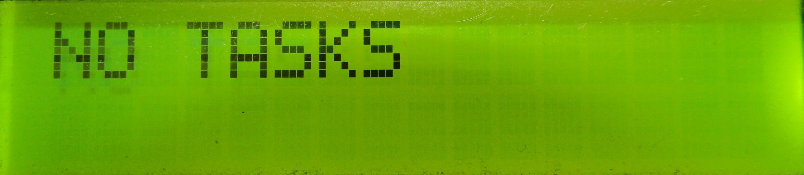

View tasks Page


void Interface_ViewTasks()
{
if(Functions_ViewTasks() == 1)
{
Functions_LCD.createChar(0, Symbols_leftArrow);
// pointers
Functions_LCD.setCursor(15, Functions_pointer);
Functions_LCD.write(byte(0));
Functions_LCD.setCursor(14, Functions_pointer);
Functions_LCD.write(byte(0));
/*
Get the specific tasks to render
*/
int index_1, index_2;
String time_1, time_2;
switch(Functions_scrollPage)
{
// Load task 1 and 2
case 0:
{
index_1 = 0;
time_1 = Functions_tasks[0];
if(Functions_tasks[1] != "0")
{
index_2 = 1;
time_2 = Functions_tasks[1];
}
else
index_2 = -1;
break;
}
// Load task 3 and 4
case 1:
{
index_1 = 2;
time_1 = Functions_tasks[2];
if(Functions_tasks[3] != "0")
{
index_2 = 3;
time_2 = Functions_tasks[3];
}
else
index_2 = -1;
break;
}
// Load task 5 and 6
case 2:
{
index_1 = 4;
time_1 = Functions_tasks[4];
if(Functions_tasks[5] != "0")
{
index_2 = 5;
time_2 = Functions_tasks[5];
}
else
index_2 = -1;
break;
}
}
/*
Render the loaded tasks
*/
Functions_LCD.setCursor(0, 0);
Functions_LCD.print("T" + String(index_1) + " " + time_1);
if(index_2 != -1)
{
Functions_LCD.setCursor(0, 1);
Functions_LCD.print("T" + String(index_2) + " " + time_2);
}
}
else
{
// Remove the pointers
Functions_LCD.setCursor(15, Functions_pointer);
Functions_LCD.print(" ");
Functions_LCD.setCursor(14, Functions_pointer);
Functions_LCD.print(" ");
}
}
bool Functions_ViewTasks()
{
// If there are no tasks then tell user
if(Functions_tasks[0] == "0")
{
// Notify
Functions_LCD.setCursor(0, 0);
Functions_LCD.print("NO TASKS");
// Button controls
Buttons_Update();
switch(Buttons_ReturnPressedButton())
{
// Go to Home page
case RIGHT_BTN:
{
Functions_LCD.clear();
Buttons_ResetReturnedButton();
Functions_currentPage = HOME;
}
}
return 0;
}
// If there are tasks...
else
{
// Button controls
Buttons_Update();
switch(Buttons_ReturnPressedButton())
{
// Go to Home page
case RIGHT_BTN:
{
Functions_LCD.clear();
Buttons_ResetReturnedButton();
Functions_currentPage = HOME;
Functions_scrollPage = 0;
Functions_pointer = 0;
break;
}
// Scroll up
case UP_BTN:
{
Buttons_ResetReturnedButton();
Functions_LCD.clear();
if(0 == Functions_scrollPage && 0 == Functions_pointer && Functions_tasks[5] != "0") {Functions_pointer = 1; Functions_scrollPage = 2;} // task 1 -> task 6
else if(0 == Functions_scrollPage && 0 == Functions_pointer && Functions_tasks[4] != "0") {Functions_pointer = 0; Functions_scrollPage = 2;} // task 1 -> task 5
else if(0 == Functions_scrollPage && 0 == Functions_pointer && Functions_tasks[3] != "0") {Functions_pointer = 1; Functions_scrollPage = 1;} // task 1 -> task 4
else if(0 == Functions_scrollPage && 0 == Functions_pointer && Functions_tasks[2] != "0") {Functions_pointer = 0; Functions_scrollPage = 1;} // task 1 -> task 3
else if(0 == Functions_scrollPage && 0 == Functions_pointer && Functions_tasks[1] != "0") {Functions_pointer = 1; Functions_scrollPage = 0;} // task 1 -> task 2
else if(1 == Functions_scrollPage && 0 == Functions_pointer) {Functions_pointer = 1; Functions_scrollPage = 0;} // task 3 -> task 2
else if(2 == Functions_scrollPage && 0 == Functions_pointer) {Functions_pointer = 1; Functions_scrollPage = 1;} // task 5 -> task 4
else if(0 == Functions_scrollPage && 1 == Functions_pointer) Functions_pointer = 0; // task 2 -> task 1
else if(1 == Functions_scrollPage && 1 == Functions_pointer) Functions_pointer = 0; // task 4 -> task 3
else if(2 == Functions_scrollPage && 1 == Functions_pointer) Functions_pointer = 0; // task 6 -> task 5
break;
}
// Scroll down
case DOWN_BTN:
{
Buttons_ResetReturnedButton();
Functions_LCD.clear();
if(0 == Functions_scrollPage && 0 == Functions_pointer && Functions_tasks[1] != "0") Functions_pointer = 1; // task 1 -> task 2
else if(1 == Functions_scrollPage && 0 == Functions_pointer && Functions_tasks[3] != "0") Functions_pointer = 1; // task 3 -> task 4
else if(1 == Functions_scrollPage && 0 == Functions_pointer && Functions_tasks[3] == "0") Functions_scrollPage = 0; // task 3 -> task 1
else if(2 == Functions_scrollPage && 0 == Functions_pointer && Functions_tasks[5] != "0") Functions_pointer = 1; // task 5 -> task 6
else if(2 == Functions_scrollPage && 0 == Functions_pointer && Functions_tasks[5] == "0") Functions_scrollPage = 0; // task 5 -> task 1
else if(0 == Functions_scrollPage && 1 == Functions_pointer && Functions_tasks[2] == "0") {Functions_scrollPage = 0; Functions_pointer = 0;} // task 2 -> task 1
else if(0 == Functions_scrollPage && 1 == Functions_pointer && Functions_tasks[2] != "0") {Functions_scrollPage = 1; Functions_pointer = 0;} // task 2 -> task 3
else if(1 == Functions_scrollPage && 1 == Functions_pointer && Functions_tasks[4] != "0") {Functions_scrollPage = 2; Functions_pointer = 0;} // task 4 -> task 5
else if(2 == Functions_scrollPage && 1 == Functions_pointer) {Functions_scrollPage = 0; Functions_pointer = 0;} // task 6 -> task 1
break;
}
// Delete
case SELECT_BTN:
{
Buttons_ResetReturnedButton();
Functions_LCD.clear();
// Delete task 1
if(0 == Functions_scrollPage && 0 == Functions_pointer) Functions_tasks[0] = "0";
// Delete task 2
else if(0 == Functions_scrollPage && 1 == Functions_pointer)
{
Functions_tasks[1] = "0";
if(Functions_tasks[2] != "0") Functions_pointer = 1;
else Functions_pointer = 0;
}
// Delete task 3
else if(1 == Functions_scrollPage && 0 == Functions_pointer)
{
Functions_tasks[2] = "0";
if(Functions_tasks[3] == "0")
{
Functions_pointer = 0;
Functions_scrollPage = 0;
}
}
// Delete task 4
else if(1 == Functions_scrollPage && 1 == Functions_pointer)
{
Functions_tasks[3] = "0";
if(Functions_tasks[4] != "0") Functions_pointer = 1;
else Functions_pointer = 0;
}
// Delete task 5
else if(2 == Functions_scrollPage && 0 == Functions_pointer)
{
Functions_tasks[4] = "0";
if(Functions_tasks[5] == "0")
{
Functions_pointer = 1;
Functions_scrollPage = 1;
}
}
// Delete task 6
else if(2 == Functions_scrollPage && 1 == Functions_pointer)
{
Functions_tasks[5] = "0";
Functions_pointer = 0;
}
/*
Rearrange tasks list
*/
String new_tasks[6];
int8_t new_Functions_tasks_index = 0;
for(uint8_t i = 0; i < 6; i++)
{
if(Functions_tasks[i] != "0")
{
new_tasks[new_Functions_tasks_index] = Functions_tasks[i];
new_Functions_tasks_index++;
}
}
// Fill in the gaps with 0's
for(uint8_t i = new_Functions_tasks_index; i < 6; i++)
new_tasks[i] = "0";
// Update the tasks list
for(uint8_t i = 0; i < 6; i++)
Functions_tasks[i] = new_tasks[i];
break;
}
}
return 1;
}
}